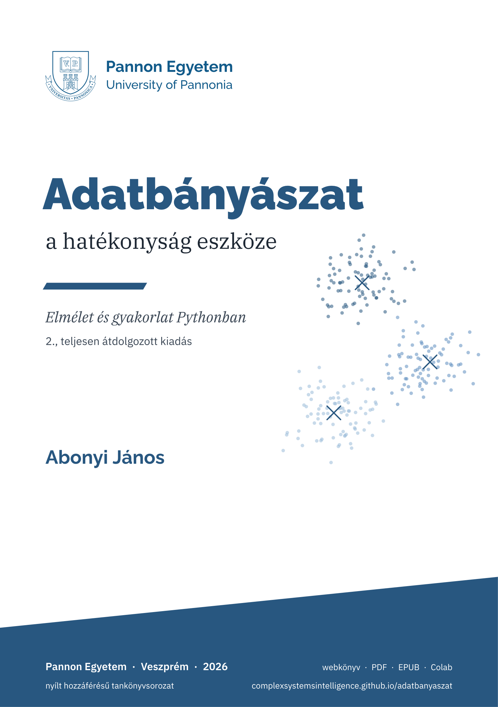

Előszó

Az adatbányászat – az adatokban rejlő, korábban ismeretlen, hasznos és érthető összefüggések feltárása – az elmúlt két évtizedben a vállalatirányítás, a mérnöki gyakorlat és a tudományos kutatás mindennapi eszközévé vált. A könyv első kiadása 2006-ban jelent meg (Abonyi, 2006), amikor a módszerek még elsősorban speciális szoftvercsomagokban voltak elérhetők, és a „big data”, a mélytanulás vagy az ipar 4.0 fogalma még nem létezett. Azóta a terület alapjaiban átalakult: a nyílt forrású Python-ökoszisztéma vált a közös nyelvvé, megjelentek az együttes modellek és a mély neurális hálózatok, és az adatvédelmi, etikai szempontok a módszertan részévé váltak. Ez a második kiadás ezért nem egyszerű frissítés: a könyvet teljesen átírtam, a régi fejezeteket korszerűsítettem és kibővítettem, és új fejezetekkel egészítettem ki – megőrizve az első kiadás gyakorlatias szemléletét és két alkalmazási szálát, az üzleti és a mérnöki adatbányászatot.
Kinek szól a könyv?
A könyv elsősorban mérnök-, gazdaságinformatikus- és adattudományi alapszakos (BSc) hallgatóknak készült, de haszonnal forgathatják a mesterszakos hallgatók és a gyakorló szakemberek is, akik az adatbányászat módszereit rendszerezett formában, a gyakorlati alkalmazáshoz szükséges mélységben szeretnék megismerni. Előismeretként középiskolai matematikát és az egyetemi analízis alapjait feltételezem; a szükséges lineáris algebrai, valószínűségszámítási és programozási ismereteket a függelékek részletesen összefoglalják.
A könyv felépítése
A tizenöt fejezet öt részre tagolódik (1. ábra). Az I. rész az alapokat teremti meg: az adatbányászati folyamatot, az adattárházakat, az adatok előkészítését és a feltáró elemzést. A II. rész a felügyelet nélküli mintázatkeresés két nagy területét, a csoportosítást és az asszociációs szabályokat tárgyalja. A III. rész a prediktív modellezésé: a modellek értékelésétől a regresszión, az osztályozáson és a neurális hálózatokon át az anomáliák észleléséig. A IV. rész két speciális adattípussal, az idősorokkal és a szövegekkel foglalkozik, az V. rész pedig az ügyfélanalitika és az ipari folyamatanalitika egységes keretébe illeszti a korábbi módszereket.

A fejezetek egymásra épülnek. A két futó eset – a PannonShop webáruház és a Pannon üzem – adatai minden fejezetben visszatérnek, és a korábbi fejezetekben elvégzett lépésekre (például az adattisztításra) építenek; így a módszerek nem elszigetelt példákon, hanem egy-egy összefüggő elemzési történet részeként jelennek meg. A futó esetek adatai szimuláltak, de valósághűek; előnyük, hogy a háttérigazság ismert, ezért minden módszer eredménye pontosan ellenőrizhető (D. függelék).
A fejezetek szerkezete
Minden fejezet egy rövid útmutatóval kezdődik, amely összefoglalja, mit és miért tárgyalunk, és mit tud majd az olvasó a fejezet végére. Az elméleti részeket kézi számolási példák kísérik, amelyekben egy kis adatsoron lépésről lépésre végigkövethetők az algoritmusok, és a fontosabb algoritmusok végén összefoglaló keret áll. A gyakorlati részekben a módszereket a futó esetekre alkalmazzuk; az üzleti és a mérnöki esettanulmányokat színes keretek jelölik. A fejezeteket összefoglalás, ellenőrző kérdések, önálló feladatok és további olvasmányok zárják.
A könyv minden ábrája, táblázata és számszerű eredménye a könyv fordításakor lefuttatott kódból származik, így a szöveg és az eredmények összhangja automatikusan biztosított. Ahol egy módszer egy adott feladaton nem teljesít jól, azt nem hallgatjuk el: ezek a „negatív” eredmények legalább annyira tanulságosak, mint a sikeresek.
Interaktív anyagok
A webes változatban a fejezetekhez böngészőben futó alkalmazások tartoznak, amelyekkel a módszerek viselkedése paraméterek változtatásával közvetlenül kipróbálható (például a \(k\)-közép algoritmus lépései, a PCA forgatása, egy döntési fa építése vagy egy ROC-görbe küszöbe). Minden fejezet kódja Google Colab-jegyzetfüzetként is elérhető, telepítés nélkül futtatható és módosítható. A könyv teljes forrása – a szöveg, a kód, az ábrák és az adatgenerátorok – nyilvános GitHub-tárolóban érhető el; a hibák bejelentését és a javítási javaslatokat ott várom.
Konvenciók
A szövegben a magyar helyesírás szerinti tizedesvesszőt használom, a programkódban és a kódkimenetekben a Python szabályai szerinti tizedespontot. A szakkifejezések angol megfelelőjét első előfordulásukkor zárójelben megadom, a teljes szójegyzék az F. függelékben található; a jelölések összefoglalása az E. függelékben. A kódrészletek a klasszikus, széles körben használt Python-csomagokra – NumPy, pandas, Matplotlib, SciPy, statsmodels, scikit-learn – épülnek; a mélytanulási példák a PyTorch keretrendszert használják.
A tankönyvsorozat
A könyv a Pannon Egyetem nyílt hozzáférésű tankönyvsorozatának része. A sorozat kötetei – köztük a Rendszermérnökség és a Biztonságkritikus rendszerek – egységes szerkezetet, arculatot és technikai megoldást követnek: a Quarto-alapú forrásból kereshető webkönyv, PDF és EPUB készül, a kiadásokat a Zenodo archiválja és DOI-azonosítóval látja el.
Licenc és hivatkozás
A könyv szövege és ábrái a Creative Commons Nevezd meg! – Ne add el! 4.0 Nemzetközi (CC BY-NC 4.0) licenc alatt nem kereskedelmi célra szabadon felhasználhatók; kereskedelmi célú felhasználásukhoz a szerző előzetes engedélye szükséges. A programkód az MIT licenc alatt áll. Hivatkozás:
Abonyi János (2026): Adatbányászat – a hatékonyság eszköze. Elmélet és gyakorlat Pythonban. 2., teljesen átdolgozott kiadás. Pannon Egyetem, Veszprém.
A pontos, kiadásonkénti DOI-azonosító a könyv weboldalán és a tároló CITATION.cff fájljában található.
Köszönetnyilvánítás
Az első kiadás a Veszprémi Egyetem Folyamatmérnöki Tanszékén, az IKTA 00142/2002 számú projekt és több OTKA-pályázat támogatásával készült. Köszönettel tartozom mindazoknak, akik az első kiadás megírásában és lektorálásában részt vettek, különösen Árva Péternek, Németh Sándornak, Vassányi Istvánnak, Feil Balázsnak, Balaskó Balázsnak, Pach Ferenc Péternek és Madár Jánosnak, valamint az esettanulmányokat és a lektori munkát vállaló gyakorló szakembereknek: Körmendi Györgynek, Cseh Zoltánnak, Halász Istvánnak, Robotka Zsoltnak, Rovnyai Jánosnak és Fekete Zoltánnak. Gondolataik és tapasztalataik ebben a kötetben is tovább élnek. A második kiadás kutatási hátterét a Nemzeti Kutatási, Fejlesztési és Innovációs Hivatal OTKA 143482 számú projektje támogatta.
Veszprém, 2026
Abonyi János